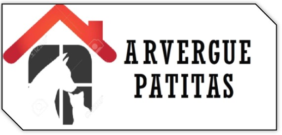
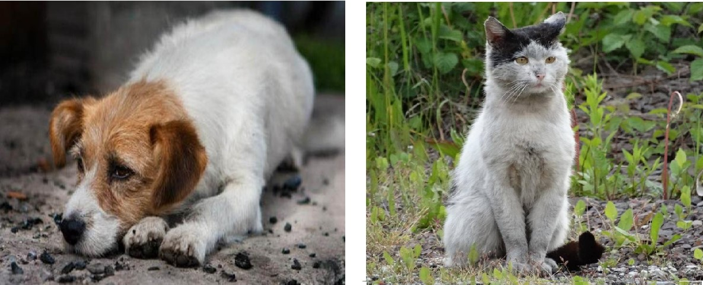

El albergue “PATITAS” es la salvación de los animales que han sido abandonados o maltratados, se han perdido o, lamentablemente, sus dueños no pueden seguir atendiendo. Gracias a estos centros sin ánimo de lucro estos animales aspiran a tener una segunda oportunidad. Por lo tanto, la mayor prestación que ofrecen los albergues es el de la acogida temporal, un concepto muy amplio en el que se incluyen: cuidados veterinarios, ejercicio físico, afecto, educación, alimentación, limpieza... Y que es complementado por acciones de tipo administrativo (cuestiones legales del centro, gestión de adopciones, coordinación del voluntariado, búsqueda de financiación…), organización de actividades y eventos de promoción y concienciación y, por supuesto, de formación (formar voluntarios y reciclaje de personal).
“El abandono animal es casi 'una plaga'. El problema ha alcanzado cifras escalofriantes debido a la tenencia irresponsable, la cría descontrolada, la venta ilegal… La falta de apoyo y control por parte de autoridades y administraciones hace que cada día un elevado número de animales sean abandonados”, relata Elena Rodríguez, que colabora como voluntaria en la protectora “PATITAS”. Ante este panorama tan complicado el trabajo de albergues como El “PATITAS” es de gran valor.
En la mayoría de los casos, adoptar significa darle una segunda oportunidad a un animal que ha sufrido un proceso de abandono, y en ocasiones maltrato. Acogerlo en tu casa de por vida y darle la estabilidad, los cuidados y el cariño que necesita va a ayudarlo a que recupere su confianza y su autoestima.
Desafortunadamente sigue siendo habitual que algunos propietarios que compran un cachorro de forma impulsiva decidan abandonarlo o dejarlo en una protectora de perros cuando se dan cuenta de que convivir con él implica un compromiso importante en términos de dedicación, paciencia y reestructuración de la rutina o estilo de vida adquirido.